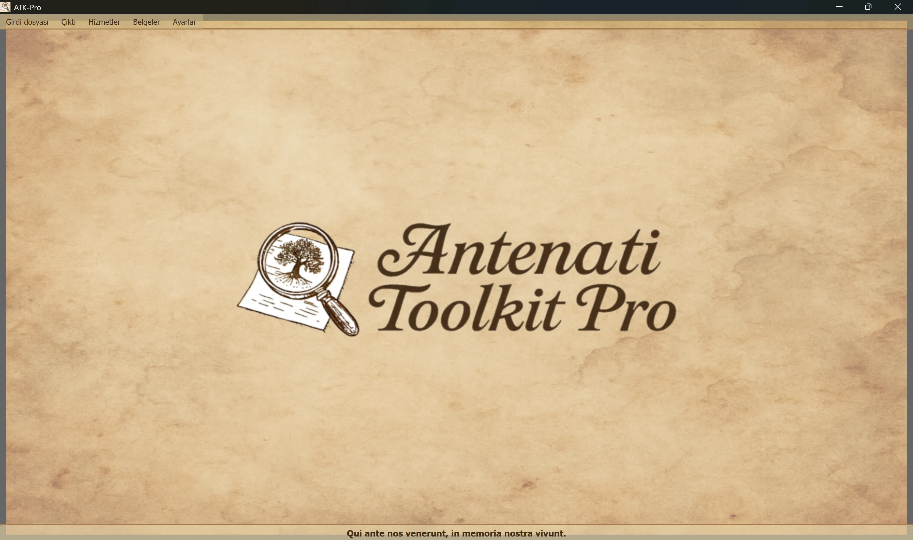

────────────────────────────────────────────────────────────────────────────────
Windows
ATK-Pro-Setup-vx.x.x.exe Resmi Yayın sayfasındanLinux
ATK-Pro-vx.x.x.deb (Debian/Ubuntu) veya .tar.gzSürüm sayfasındansudo dpkg -i ATK-Pro-vx.x.x.deb veya çift Nautilus /Files./ATK-Pro Orijinal klasördenmacOS
ATK-Pro-vx.x.x.dmgSürüm sayfasındanWindows
C:\Program Files\ATK-Pro\C:\Users\[TuoNome]\Documents\ATK-Pro\output\C:\Users\[TuoNome]\Documents\ATK-Pro\input\Linux
/opt/ATK-Pro/ (deb) veya klasör (.tar.gz)~/Documents/ATK-Pro/output/~/Documents/ATK-Pro/input/macOS
/Applications/ATK-Pro.app~/Documents/ATK-Pro/output/~/Documents/ATK-Pro/input/────────────────────────────────────────────────────────────────────────────────
Mevcut diller şunlardır:
Bununla birlikte, 2025 yılının sonunda mevcut verilere göre, İtalyanlar ve İtalyan veya İtalyan topluluklarının yaklaşık% 98'ini dünya çapında dağıtabileceği tahmin edilmektedir.
İlk çalıştırdığınızda, program otomatik olarak aşağıdaki klasörleri yaratır:
C:\Users\[TuoNome]\Documents\ATK-Pro\output\C:\Users\[TuoNome]\Documents\ATK-Pro\output\doc\ (default belgeleri)C:\Users\[TuoNome]\Documents\ATK-Pro\output\reg\ (default kayıtları)~/Documents/ATK-Pro/output/input\ Analog (isteğenim, dosya girişi için)Geçici klasörleri işleme işlemi indirilmiş karo için oluşturulur (tiles_canvas_X/) ve gerekirse, PDF, nesli için geçici dosyalar.
Tüm geçici klasörler ve dosyalar işlem sonunda otomatik olarak silinir.
Sadece son dosyaları işliyor ( seçilen formatlarda görüntüler, PDF, açık ve metadata).
Çıktı klasörlerini değiştirmek için Menü → Ayarlar → "Örnek klasörleri seçin". Seçenekler bir sonraki oturuma otomatik olarak depolanır ve restore edilir.
Komutan Ayarlar İndirme sırasında kullanılan paralellik, görüntü yeniden yapılandırması ve PDF nesli:
Profil, elde edilen belgelerin kalitesini, haklarını veya miktarını değiştirmez. Bir portalın özel prudential limitleri öncekilere devam etmektedir.
────────────────────────────────────────────────────────────────────────────────
Antenati Toolkit Pro'nun ana penceresi basit ve sezgisel bir yapıya sahiptir.

Latin sloganı “Qui ante nos venerunt, vivunt anısına”, kökleri ve kolektif hafızanın önemini hatırlıyor.
Pencerenin tepesinde, kafa altında:
[File girdi] [Output] [Hizmetler] [Documents] [Settings]
Her menü belirli düğmeler ve seçenekler içerir (bir sonraki bölüm bakınız).
IIIF kayıtlarının yüklenmesini yönetin:
├─ Esempio input
│ └─ Visualizza il file di esempio (mostra formato coppie: modalità D/R + URL)
├─ Apri input
│ └─ Seleziona un file .txt con i tuoi record IIIF
│ (Deve contenere coppie: modalità D/R su riga 1, URL su riga 2)
└─ Modifica input
└─ Modifica il file input attualmente caricato
(Aggiungi/rimuovi record, cambia URL, salva modifiche)
İşleme ve çıktıyı yönetin:
├─ Elabora │ └─ Avvia il download, la ricostruzione e il salvataggio delle immagini │ (Mostra finestra di progresso in tempo reale) ├─ Apri cartella output │ └─ Apre in Esplora Risorse la cartella con i file elaborati └─ Visualizza elaborazioni precedenti └─ Lista dei record già elaborati
Entegre hizmetlerin listesi:
├─ Ricerca assistita AI │ └─ Suggerisce portali, piste di ricerca e query genealogiche da verificare ├─ Visualizzazione Immagini │ └─ Viewer immagini scaricate e/o PDF generati ├─ Visualizzazione Metadati JSON │ └─ JSON originali e metadati (genealogici, tecnici, EXIF) ├─ OCR Avanzato │ └─ Testi manoscritti ottocenteschi, latino ecclesiastico, tardo-medievali ├─ Traduzione OCR │ └─ Traduzione automatica testi estratti nelle lingue selezionate └─ Esportazione GEDCOM └─ GEDCOM, Gramps, Family Tree Maker, Ancestry, MyHeritage, WikiTree, etc.
Kaynaklara ve belgelerine erişim:
├─ Disclaimer - Clausole legali e termini d'uso ├─ Presentazione autore - Background dell'autore del progetto ├─ Presentazione progetto - Storia, motivazioni, roadmap di ATK-Pro ├─ Guida - Indice principale della guida modulare └─ Informazioni - Versione, copyright, email di contatto
Programın genel konfigürasyonu:
├─ Cambia lingua
│ └─ Seleziona la lingua dell'interfaccia (richiede riavvio)
├─ Seleziona formati immagine
│ └─ Scegli tra PNG, JPG, TIFF e PDF (almeno 1 obbligatorio)
│ PDF può essere selezionato da solo o insieme ai formati immagine
│ La scelta viene memorizzata e pre-selezionata automaticamente alla sessione successiva
├─ Seleziona cartelle output
│ └─ Apre prima la scelta della modalità cartelle, poi le finestre di selezione:
│ • Cartella unica per tutti → una sola cartella per documenti e registri
│ • Cartelle separate doc/reg → una cartella per tutti i doc, una per tutti i reg
│ • Cartella per ogni record → una cartella distinta per ciascun record
│ La modalità e le cartelle vengono memorizzate e ripristinate alla sessione successiva
├─ Esporta configurazione
│ └─ Salva le impostazioni attuali in un file
├─ Importa configurazione
│ └─ Carica un file di impostazioni precedentemente salvato (ripristina tutte le preferenze e percorsi)
├─ Verifica aggiornamenti
│ └─ Controlla la disponibilità di nuove versioni del programma
└─ Chiudi
└─ Termina il programma (mostra banner di supporto PayPal.me)
────────────────────────────────────────────────────────────────────────────────
ATK-Pro 20 dilde mevcuttur:
Dil, Menu → Ayarlar aracılığıyla herhangi bir zamanda değiştirilebilir.
Program yeni dili uygulamak için bir yeniden başlatma gerektirir.
Yeniden başladığında, program otomatik olarak yeni seçilmiş dili yükler.
Dil değişikliği tercüme edilir:
Varsayılan bir model kullanımdan kaldırılır veya artık erişilemez olursa ATK-Pro, kimlik bilgileriyle görülebilen kataloğu sorgular, işleve ve gerektiğinde görüntülere uygun genel amaçlı bir model seçer ve en fazla üç alternatifi dener. Kota, ağ veya kimlik doğrulama hatalarında geri dönüş etkinleştirilmez.
Model geçersiz kılma: elle girilen bir model bağlayıcı kalır ve hiçbir zaman otomatik olarak değiştirilmez.